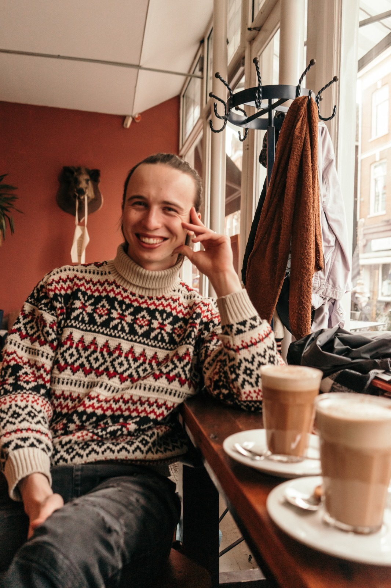

Cognitive neuroscience · behavioural science
Petr Šupa
Researcher working across cognitive neuroscience, behavioural science, mental health, and psychedelic research. I combine longitudinal and person-specific data with Bayesian and multilevel methods to study psychologically meaningful change in real-world contexts.

Profile
People-centred, methodologically rigorous research.
My work sits at the intersection of cognitive neuroscience, clinical and social psychology, and open science. Across Amsterdam UMC, Radboud University, Emory University, and the National Institute of Mental Health in Czechia, I have worked with prospective cohorts, behavioural experiments, clinical data, ecological momentary assessment, and neurophysiological methods.
Education
Two Research Master's programmes, one interdisciplinary foundation.
I completed concurrent Research Master's programmes at Radboud University, following a Bachelor's degree in Humanities and Social Sciences at Charles University and two Erasmus+ psychology exchanges in Nijmegen.
Radboud University · 2023–2026
MSc Behavioural Science (Research)
Methodology, statistics, clinical psychology, behavioural regulation, and complex systems. Affiliated with the Behavioural Science Institute.
120 ECTS
Weighted judicium average: 8.351
Thesis: 8.5 / 10
Radboud University · 2024–2026
MSc Cognitive Neuroscience (Research)
Development and lifelong plasticity specialisation, neuroimaging, social neurocognition, neurogenetics, and electrophysiological methods. Affiliated with the Donders Institute for Brain, Cognition, and Behaviour.
137 ECTS completed
Weighted total: 8.160
Judicium average: 8.272
Neurophilosophy minor
Charles University · 2020–2023
Bc. Humanities & Social Sciences
Psychology major with an interdisciplinary humanities and social-science foundation, including a Bachelor's project in sex research.
233 ECTS
Top 10% of students
Two Erasmus+ exchanges
Radboud Honours Academy
Interdisciplinary honours training
Participatory and citizen science, an eight-month municipal impact project, and a Beyond the Frontiers grant supporting an external research internship.
Project Impact
Beyond the Frontiers
Cross-disciplinary collaboration
Experience
A cross-institutional research timeline.
Selected research affiliations and projects, ordered from the most recent and ongoing work to earlier training.
2025–present
Emory University School of Medicine · Remote collaboration
Ecological momentary assessment of health symptoms and adverse effects surrounding naturalistic psilocybin use, with emphasis on multi-day within-person patterns.
2024–present
Amsterdam UMC · Medical Psychology
Major Master's internship in the AFFIRM Relationships project: a prospective transgender cohort integrating clinical, behavioural, and self-report data.
Summer 2025
National Institute of Mental Health, Czechia · Psychedelic Research Center
Externally funded research internship involving phase-I randomised clinical-trial data, emotion-recognition research, and a scoping review.
2023–present
Radboud University · Teaching and research assistance
Research-methods teaching, supervision of more than 40 undergraduate projects, and assistantships involving meta-analysis, intervention development, and dynamic cluster analysis.
2022–2023
Charles University · Department of Psychology and Life Sciences
Bachelor's internship and project on primary sexual experiences and later sexual trajectories in a diverse sample of 430 participants.
Selected research
Longitudinal change, emotion, and mental health.
Projects combine behavioural paradigms, repeated measurements, preregistration, and open-science workflows.
Gender-affirming hormone therapy and emotional interference
Preregistered longitudinal study of emotional interference before and three months after initiating gender-affirming hormone therapy, using individualized Bayesian mixed-effects models in the AFFIRM cohort.
The effect of psilocybin on emotion recognition
First-author preregistered project examining behavioural mechanisms that may accompany positive therapeutic change, linked to depression and mood self-report outcomes.
Psilocybin and multi-day ecological sampling
Two projects evaluating the value of intensive repeated measurement for detecting circadian-like fluctuations in health symptoms and adverse experiences surrounding naturalistic psilocybin use.
Behavioural biases and mental-health outcomes
Approach–avoidance responses to social-emotional facial stimuli in relation to loneliness, depressive symptoms, and social anxiety among young adults.
Methods & practice
Tools for complex, person-specific data.
My methodological interests centre on intensive longitudinal designs, multilevel inference, and research practices that remain interpretable and useful outside the laboratory.
Methods and software
- Bayesian mixed-effects modelling
- Multilevel modelling
- Longitudinal data
- Ecological momentary assessment
- Behavioural experiments
- EEG and electrophysiology
- Neuroimaging
- R / RStudio
- Python / PsychoPy
- MATLAB
- Preregistration
- Open science
Selected highlights
- Conference communication Two talks and a poster presented across three conferences in 2026.
- Teaching and supervision Research-methods teaching and supervision of 40+ undergraduate students.
- International collaboration Research experience across the Netherlands, Czechia, and the United States.
- Leadership Former chair of an education committee organising academic and career events.
Contact
Research is collaborative. Let’s connect.
For research collaboration, academic opportunities, or questions about my work, contact me by email or through the profiles listed here.